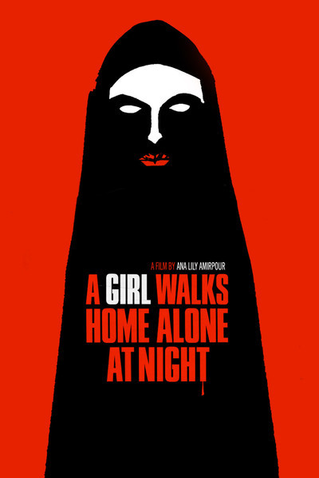

Films
Moonrise Kingdom

Beautifully shot film that is very typical of a Wes Anderson film. The score worked well with the viuals to propel the story forward. When Suzzy and Sam decide to run off, its reminiscent of a childhood innocence where consequences are not considered. That happiness comes from understanding someone else's pain. It is the impending feeling that with age, such irresponsibility is not torelated. Cue Bruce Willis and his role as the bachelor officer. When he shares a scene with Sam, you feel a sort of sadness for him. Interesting tid bit, whenever Suzzy is reading a scene in her books, the same thing is happening to her in the film. Moonrise Kingdom is a good film that made me nostalgic and a little whistful about my past.
A Girl Walks Home Alone At Night
